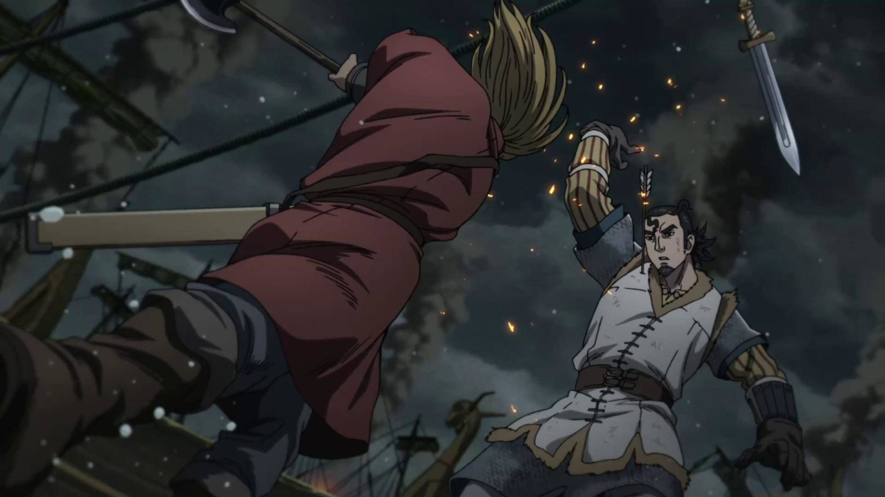
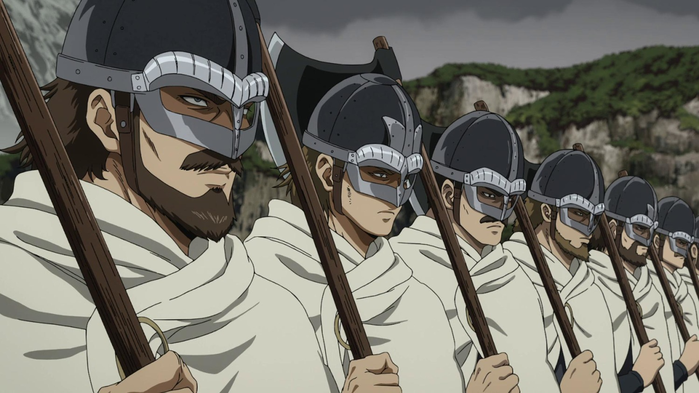
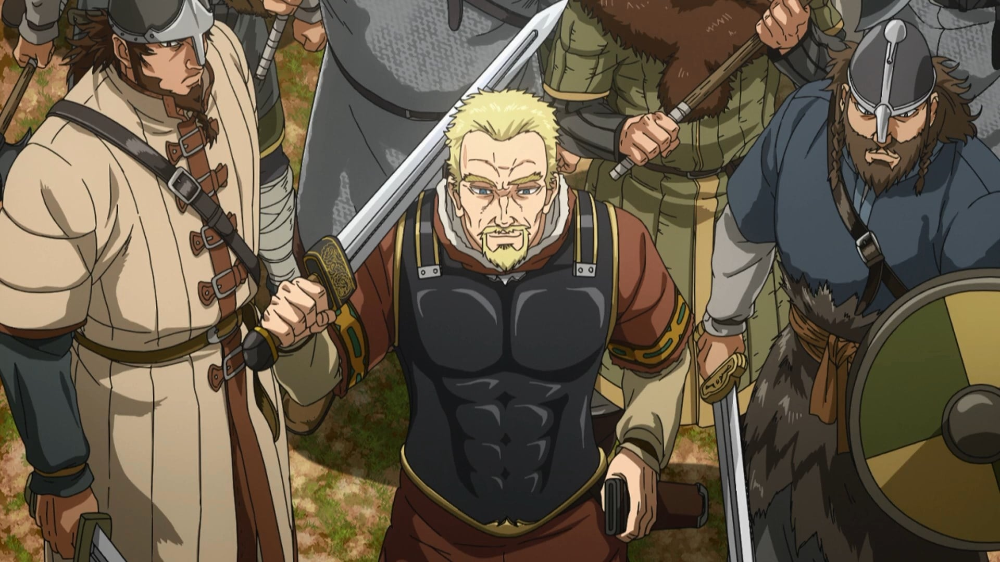
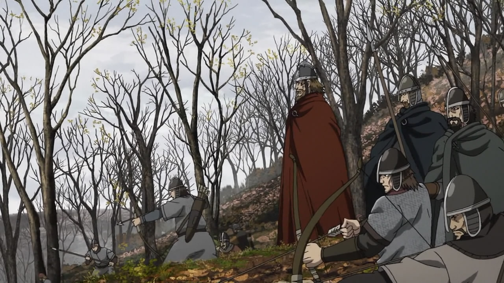
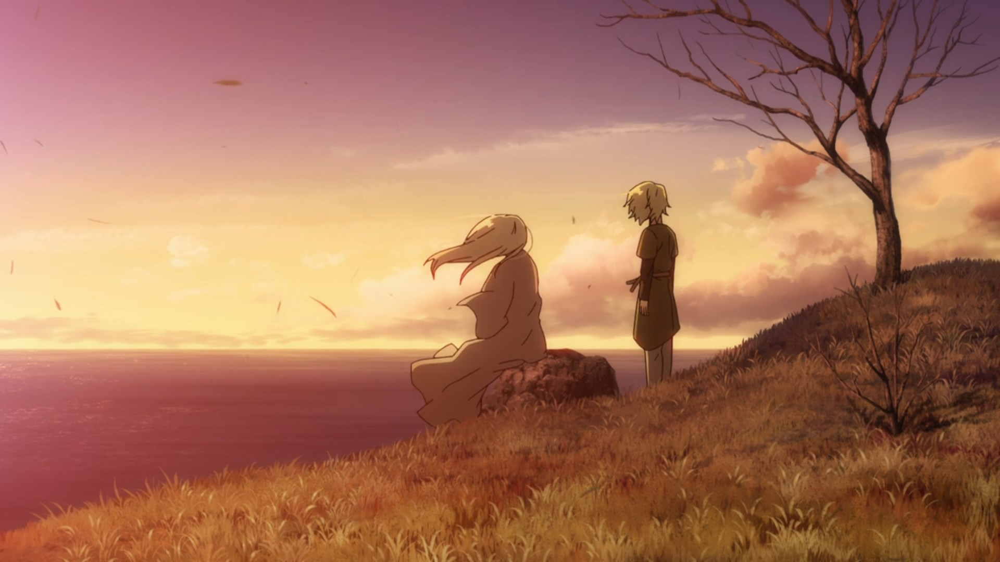
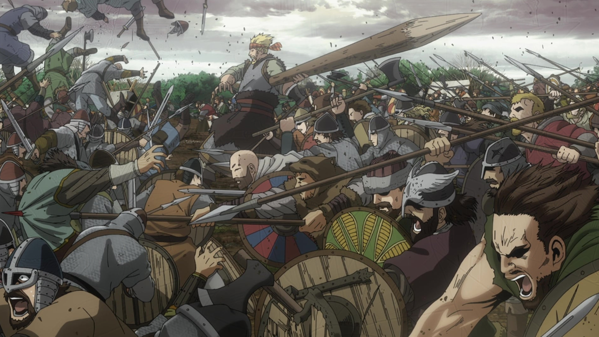
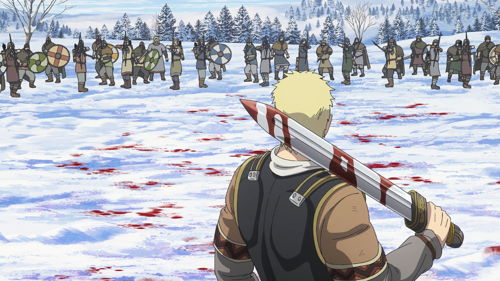
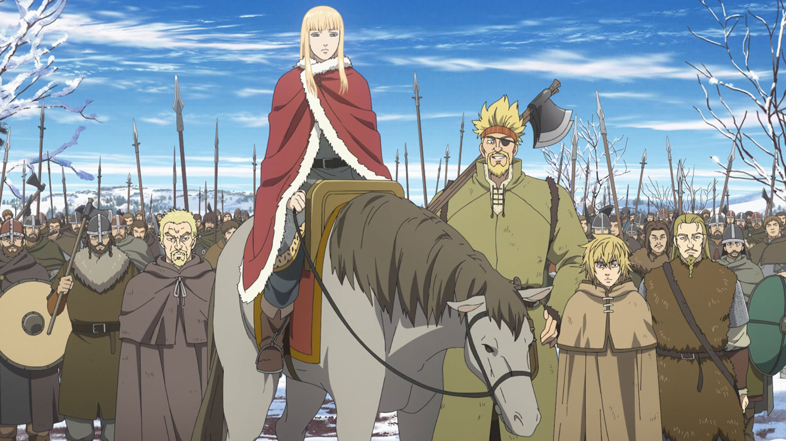
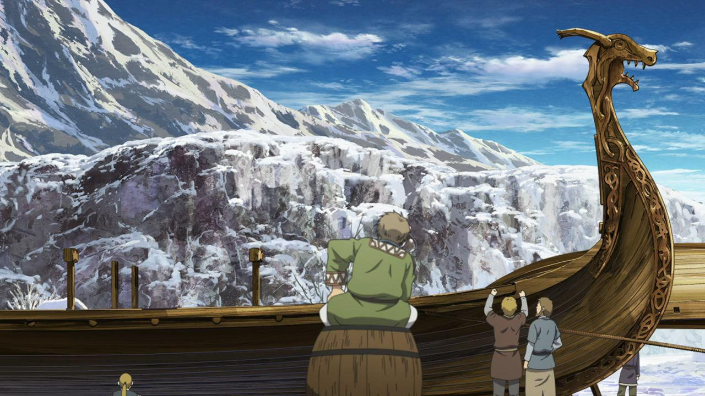

Аниме про старых добрых викингов. Отважных мореходах, которые в поисках богатства и жажды сражений веками держали в страхе жителей всей Европы. Сюжет же происходит во времена вторжения Дании в Англию и основан на реальных событиях. Некоторые персонажи - это некогда существовавшие исторические фигуры: Принц Кнуд, Король Свен, Торкелль, Лей Фэрриксон, и даже наш главный герой Торфинн. Как вы понимаете историей, политикой и религией здесь пропитано всё. Есть даже сцена, где викинги обсуждают кто круче: Иисус или Один, явно посмеиваясь над первым.









Отойдя от исторических фактов можно сказать, что здесь нам показывают жизнь одного мальца в этом жестоком мире насилия и войн. Наблюдение за его становлением завораживает и по ходу пьесы он еще не раз будет менять свои взгляды на мир. Радует, что здесь нет “соплей” и какой-то раздутой наигранности. Это суровый мир, в котором выживает сильнейший. Ценности, приоритеты и культура норманнов поданы весьма добротно. Морские просторы и красиво прорисованные пейзажи. Все настолько живописно, что не раз хотелось оказаться на месте персонажей и чувствовать трепет перед неизвестностью. Аниме хорошо балансирует между реализмом и вымыслом с красочными эффектами. Все это несомненно привлечет внимание искушенного зрителя.
- 1 Сезон
- 2 Сезон
- 3 Сезон
- ...